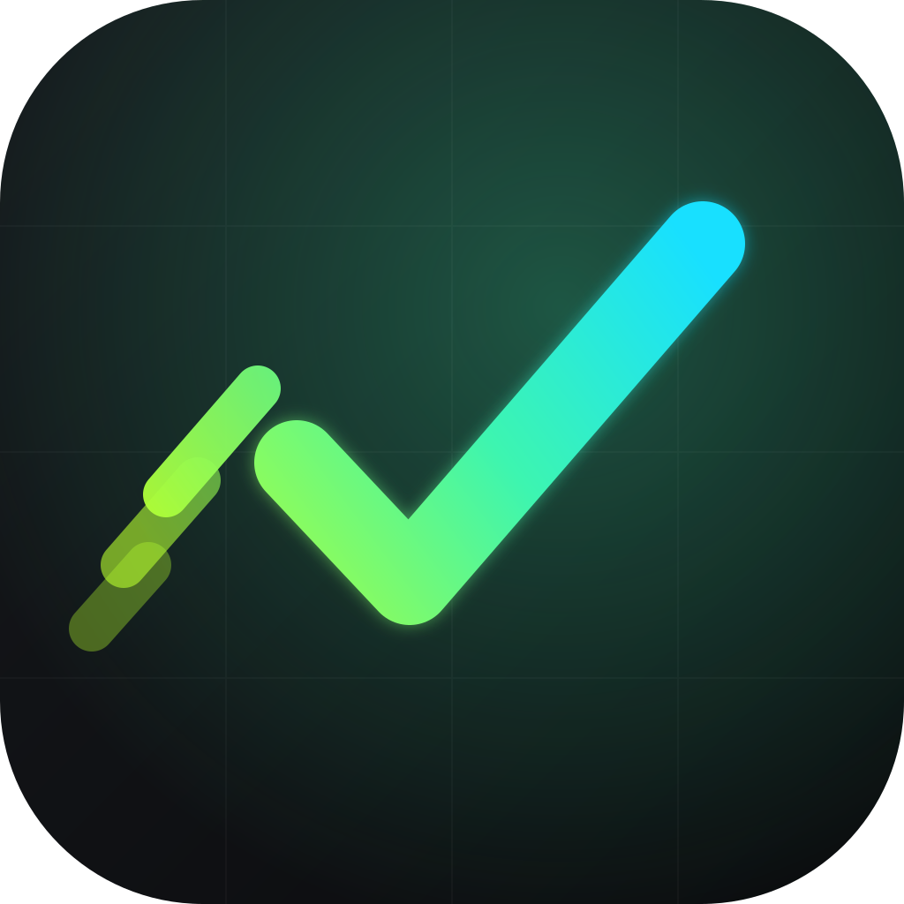
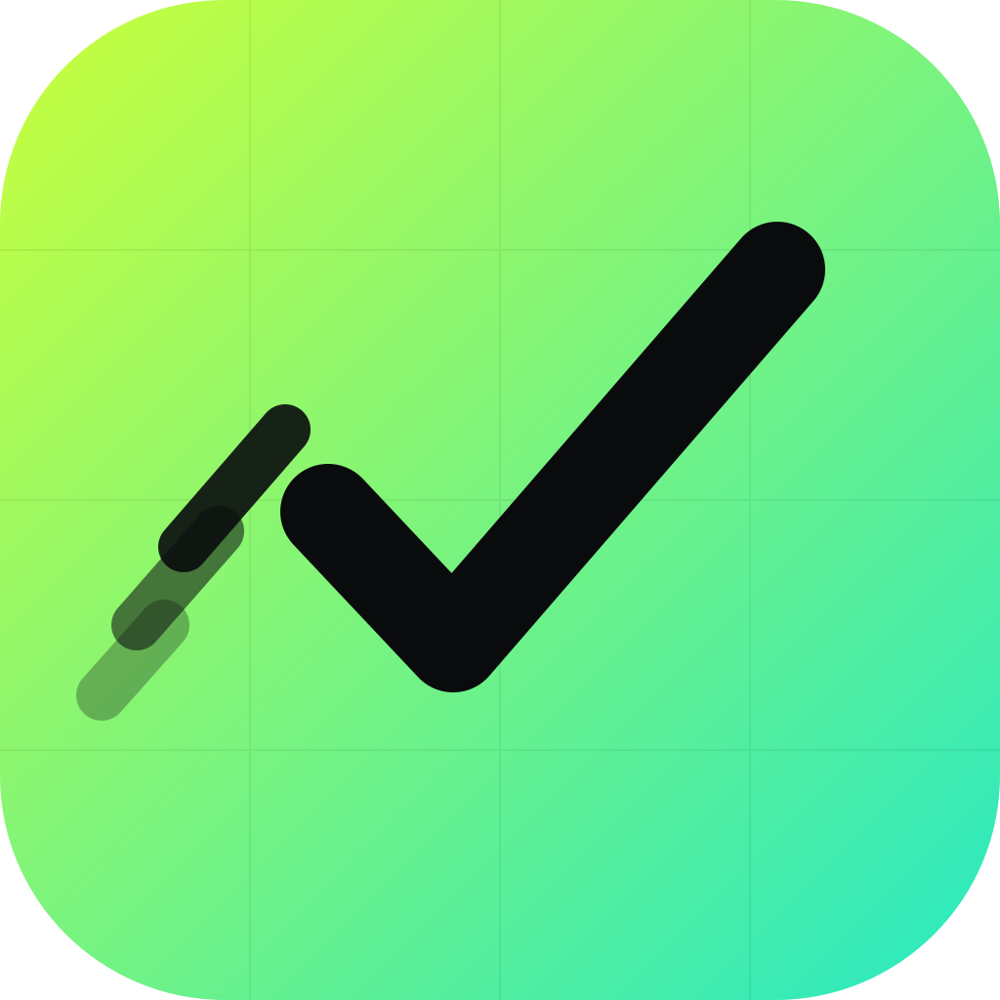

The fast-capture todo system. A checkmark that moves — done at the speed of thought. Built for engineers who context-switch hard and forget nothing.


ACID · ALTA checkmark = done. Its long arm rips forward into a sharp point, chased by motion trails — velocity made literal. One glyph says capture, complete, and speed.
Carbon-black canvas, a single electric gradient, an engineering grid texture, and tight italic Archivo set against JetBrains Mono. Technical, edgy, unmistakably built-by-a-dev.